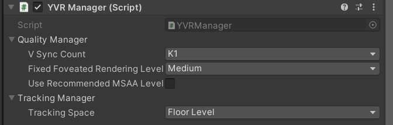

YVRManager
YVRManager 脚本是整个 SDK 的核心管理程序，它控制 VR 事件功能的执行，并提供不同的渲染质量、跟踪模式、性能等设置。
配置设置
渲染质量、跟踪空间、性能等方面的设置可以通过 YVRManager 的 Inspector 面板进行设置。

质量
VSync Count：每一帧之间应通过的 VSyncs 数量。Fixed Foveated Rendering Level：固定凹陷渲染的级别。该值越高，图片的边缘越模糊，但性能会越好。UseRecommendMSAALevel：固定凹陷渲染的级别。该值越高，图片的边缘越模糊，但性能会越好。
追踪
Tracking Space：刚性姿势的跟踪空间。Eye Level：HMD 姿势不会考虑地面高度。Floor Level：大多数情况下使用的模式，它将考虑地面高度和重新定位状态。Stage：HMD的姿势不会考虑重新定位的状态。
事件
在运行时发生的事件都在 YVRManager.instance.eventsManager 中管理，包括：
onTrackingAcquired：当头部获得追踪时发生。onTrackingLost：当头部失去追踪时发生。onHMDMounted: 当 HMD 被安装到用户头上时发生。onHMDUnMounted：当 HMD 从用户头上取下时发生。onRecenterOccurred：发生在重新定位时。onFocusGained：当应用程序获得焦点时发生。onFocusLost：当应用程序的焦点丢失时发生。onVisibilityGained：当应用程序可见时发生。onVisibilityLost：当应用程序被其他内容完全遮挡时发生。onUpdate：发生在每一帧的更新功能中。onPreSubmitGfx：发生在当前帧被提交到本地之前，这将在渲染线程中被触发。onPostSubmitGfx：发生在当前帧被提交到本地后，这将在渲染线程中被触发。
设备状态
设备状态可以在 YVRManager.instance.hmdManager 中查询，例如：电池电量、电池温度、音量大小。
边界状态
所有的边界状态都可以在 YVRManager.instance.boundary 中查询，例如：边界尺寸、边界可见度。此外，YVRManager.instance.boundary 还提供了几个接口，用于查询与边界相交的状态。